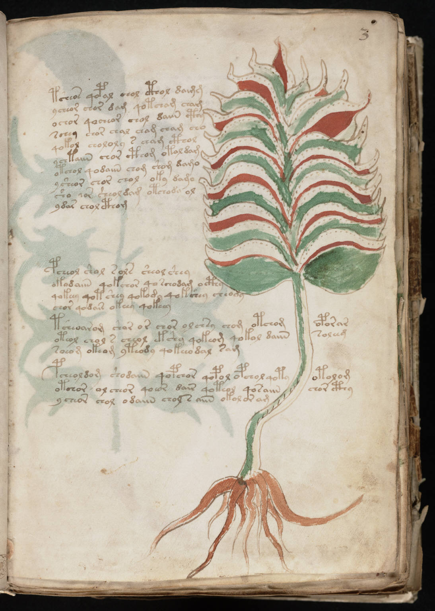

f3r
1tsheos qopal chol cthol daimm2ycheor chor dam qotcham cham3ochor qocheor chol daiin cthy4schey chor chal cham cham cho5qokol chololy s cham cthol6ychtaiin chor cthom otal dam7otchol qodaiin chom shom damo8ysheor chor chol oky damo9sho *or sheoldam otchody ol10ydas chol cthom11pcheol shol sols sheol shey12okadaiin qokchor qoschodam octhy13qokeey qot shey qokody qokchey cheody14chor qodair okeey qokeey15tsheoarom shor or chor olchsy chom otchomoporar16oteol chol s cheol ekshy qokeom qokol daiinsoleeg17soeom okeom yteody qokeeo dal sam18pcheoldom shodaiin qopchor qopol opchol qotyotolom19otchor ol cheor qoeor dair qoteol qosaiinchor cthy20ycheor chol odaiin chol s aiin okolor am
